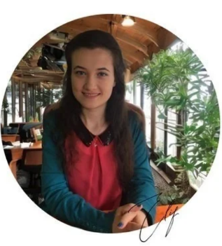

About Me

I am an AI Researcher focused on Scientific Machine Learning and Computational Astrophysics. My journey is a professional pivot from a quantitative background in Economics (since 2015) toward Artificial Intelligence (since 2025) and Computational Astrophysics (since 2026).
I apply statistical data analysis expertise to exoplanet datasets from Kepler and TESS through Bayesian inference, MCMC-based scientific modeling, and uncertainty quantification. My focus is on extracting physical insights from complex datasets and developing interpretable AI solutions.